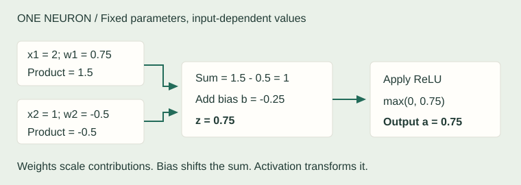
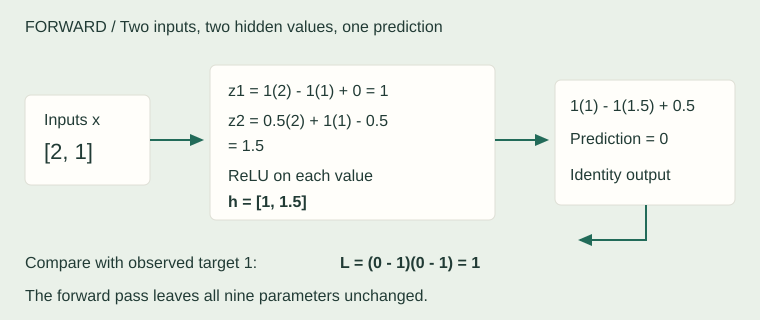
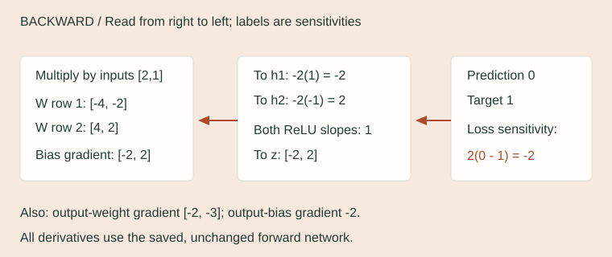
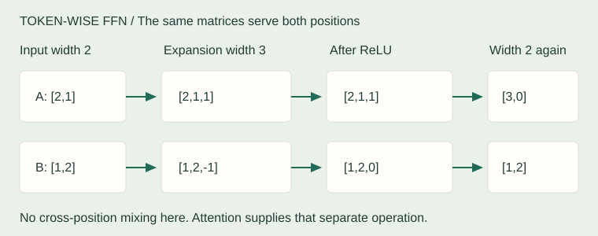
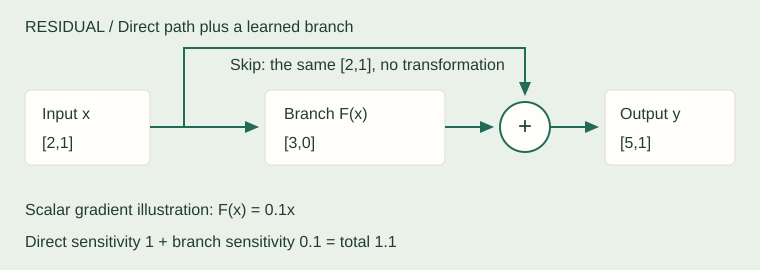
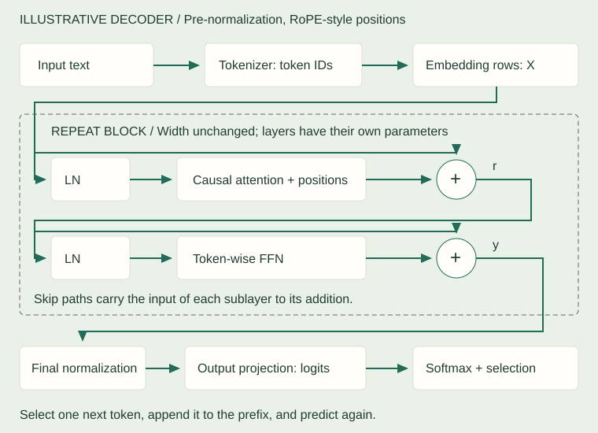

Part I / From mathematics to models / 05
Calculate a network's prediction, follow the error backward, update every parameter, and recognize the same operations inside a Transformer.
The engineering question
Your support service estimates resolution effort from ticket measurements. You can write rules, but the useful combinations keep changing. How can examples determine the coefficients of a prediction program? What actually changes when that program learns?
A neural network is a program built from numerical operations with adjustable values. In this chapter you will execute a small one by hand. Then you will use that experience to distinguish the jobs of attention, a feed-forward network, residual connections, and normalization inside a language model.
No mathematical background beyond arithmetic is assumed. The notation reminders link to fuller earlier lessons. Work through sections 1-7 in order: they form one prediction-to-update story. Sections 8-12 connect it to Transformers; sections 13-15 consolidate it, including all 14 adapted source interview questions.
What these numbers are
All features, weights, probabilities, and network widths below are invented teaching values, not measurements from a production service or model. They illustrate calculations, not a validated effort estimator or a benchmark. The source PDF calls itself Chapter 4; this is Chapter 5 in our book.
A rule-based estimator might say, "Add extra effort whenever a ticket involves two services." You choose both the rule and its coefficient. A learned estimator instead uses examples of inputs and observed outcomes to adjust coefficients against a declared objective. You still choose the measurements, model structure, training procedure, and evaluation. Learning does not remove engineering judgment.
A function is a rule that produces an output from an allowed input. Writing f(x) means "apply the rule named f to the value x," not multiply f by x. For example, define f(x)=2x+1: double x, then add one. At x=3, f(3)=2(3)+1=7. The parentheses supply the argument. Chapter 2 develops this input-output viewpoint.
| Stage | Hand-written rule | Learned model |
|---|---|---|
| Before use | Engineer chooses coefficient 2 and offset 1 | Training adjusts a coefficient and offset using examples |
| At prediction time | For input 3, calculate 2(3)+1=7 | With the same stored values, calculate exactly the same 7 |
| What just happened? | Evaluation of arithmetic | Also evaluation of arithmetic, not another training step |
A parameter is a stored value eligible to be adjusted by training, such as a multiplication coefficient or an offset. An activation is a value computed for a particular input. In the example, 2 and 1 are parameters; the result 7 is an activation. Another input can change the activation without changing either parameter.
A hyperparameter configures the model or training procedure rather than being obtained by the ordinary parameter update: examples include layer width, number of layers, learning rate, and batch size. A batch is a group of examples processed for one training calculation. These choices may be tuned using evaluation, but they are not the same objects as the model's learned coefficients.
A neural network composes many such functions, including nonlinear ones. A composition uses one function's output as the next function's input. Token IDs, learned embedding values, and contextual activations likewise have different roles: chapter 4's lookup reminder separates the address from the numbers used in computation.
Our stored rule is still f(x)=2x+1. A second ticket has x=4 and output 9. Did a parameter change? If training later replaces 2 by 1.8, what changes for x=3?
No parameter changed just because the input changed: 2(4)+1=9. Replacing 2 by 1.8 is a parameter change. Re-evaluating the earlier input now gives 1.8(3)+1=5.4+1=6.4. Ordinary inference is the first kind of operation; training can cause the second.
A scalar is one number. A vector is an ordered list of numbers; its dimension or width is its number of entries. An index identifies an entry. We use indices 1 and 2 for the two features here, not token IDs. Let x_1=2 be a scaled count of affected services and x_2=1 a scaled diagnostic measure. The scaling is stipulated; neither coordinate is intrinsically an effort unit.
A weight multiplies an input. A bias is added after the weighted inputs are combined. For two inputs, call the weights w_1,w_2, the bias b, the sum before activation z, and the final output a. An activation function, named f, transforms z into a. Parameters and inputs are real numbers: they may be negative or fractional.
Subscripts pair each weight with its corresponding input. Adjacent symbols such as w_1x_1 mean multiplication. The dot product is this multiply-matching-entries-and-add operation, before b is included. Chapter 1 gives its geometric interpretation.

Worked example / Separate the contributions
Choose w_1=0.75,\ w_2=-0.5,\ b=-0.25. The two products are 0.75(2)=1.5 and -0.5(1)=-0.5. Adding gives 1.5-0.5=1; adding the bias gives z=1-0.25=0.75. With ReLU, which keeps positive values and replaces negative values by zero, a=0.75.
If both inputs are zero, the weighted products are zero but z=b=-0.25. Changing b shifts the baseline for every input; changing a weight changes how one coordinate affects z. Increasing x2 from 1 to 2 with fixed parameters changes its contribution from -0.5 to -1, so z falls to 0.25.
Weights are not universally interpretable feature-importance scores. Their effect depends on input units, other weights, activations, and downstream paths. A negative weight can suppress a sum, but that is not a claim that the feature is morally negative or globally unimportant.
A linear map uses multiplication and addition of input contributions and sends the all-zero input to zero. Adding a nonzero bias makes the map affine: linear transformation plus offset. Frameworks often name an affine layer "Linear"; the mathematical distinction still matters. Embedding projections and Transformer feed-forward layers use these same products and sums at much larger widths.
Keep this neuron's inputs and weights fixed. Replace b=-0.25 by b=-1.25, then by b=0. What are z and the ReLU output? What if both weights become zero?
The weighted products still sum to 1. With b=-1.25, z=1-1.25=-0.25 and ReLU gives 0. With b=0, z=1 and ReLU gives 1. If both weights are zero, z=b independently of the input; the output is f(b). With b=-1.25 that output is 0 for ReLU, not necessarily zero for a different activation.
Why not just stack weighted sums? Consider two scalar affine layers: first h=2x+1, then y=3h-4. Substitute the first expression for h: y=3(2x+1)-4=6x+3-4=6x-1. They collapse into one affine rule. At x=2, the long route gives h=5 then y=11; the collapsed route gives 6(2)-1=11. Matrices obey the corresponding composition rule.
Nonlinear means not expressible as a linear map; here we need an activation that also prevents a whole affine stack from collapsing to a single affine map. A bend, threshold, or smooth input-dependent gate can do that. This expands what a network can represent; it does not guarantee that training finds a useful solution.
ReLU, the rectified linear unit, returns the larger of zero and its input. The operation \max means "choose the largest listed value."
| z | ReLU | Sigmoid | Tanh | GELU, approximately |
|---|---|---|---|---|
| -1 | 0 | 0.268941 | -0.761594 | -0.158655 |
| 0 | 0 | 0.5 | 0 | 0 |
| 1 | 1 | 0.731059 | 0.761594 | 0.841345 |
Read the ReLU column as a bent line: flat at zero on the negative side, rising one unit per input unit on the positive side. To see why an affine rule cannot replace it, suppose that rule matched outputs 0 at inputs -1 and 0. Its slope would be (0-0)/(0-(-1))=0; it would stay constant. But ReLU(1)=1, contradicting that constant prediction.
For a positive z, a small change passes through unchanged. For a strictly negative z, a sufficiently small change still outputs zero. At exactly zero there is a corner, so no unique ordinary derivative exists; common implementations choose derivative 0 there. A hidden unit staying negative for all its training inputs can receive zero gradients along that ReLU path. This is a local mechanism, not proof that all negative activations in all networks are bad.
We need an exponential before defining sigmoid. The function \exp(z)=e^z uses the constant e\approx2.71828. Positive integer powers mean repeated multiplication; the exponential extends this consistently to real arguments. It is always positive, e^0=1, and e^{-z}=1/e^z. These calculator functions are refreshed in chapter 2.
The Greek letter \sigma, read "sigma," names the sigmoid function here. It is not a summation sign. Tanh, the hyperbolic tangent, is another named function; you do not need trigonometry to evaluate this exponential definition.
Worked example / Reproduce the activation table
Use e^1\approx2.718282 and its reciprocal e^{-1}\approx0.367879. At z=1, sigmoid gives:
Tanh's numerator is 2.718282-0.367879=2.350403; its denominator is 2.718282+0.367879=3.086161. Dividing gives approximately 0.761594. We calculate with full precision and round displayed values.
At z=0, both exponentials equal 1: sigmoid is 1/2, and tanh is (1-1)/(1+1)=0/2=0. At z=-1, sigmoid's denominator is 1+e^1\approx3.718282, so its output is approximately 0.268941. Tanh's numerator reverses to 0.367879-2.718282=-2.350403; the denominator stays 3.086161, giving approximately -0.761594.
For finite real inputs, sigmoid lies strictly between 0 and 1; tanh lies strictly between -1 and 1. They approach but do not reach those limits in exact arithmetic. Saturation means that far along a tail, changing the input changes the output very little. For instance, sigmoid(5) is about 0.993307 and sigmoid(6) about 0.997527: a whole input unit changes output by only 0.004220. Around zero, sigmoid(0)=0.5 and sigmoid(1)=0.731059 differ much more. Floating-point arithmetic can round a tail to an endpoint.
Sigmoid can parameterize one binary event's probability, but a value between 0 and 1 is not automatically a calibrated real-world confidence. Binary means two outcomes, such as reopen/not-reopen. Tanh supplies signed bounded activations. These functions are not interchangeable with each other or with a hidden layer's architecture-specific activation.
GELU, Gaussian error linear unit, multiplies z by a smoothly changing gate. A probability records a chance from 0 to 1. The standard normal distribution is a particular symmetric, bell-shaped probability model centered at zero with standard deviation one. Standard deviation is a measure of spread: "one" here fixes its unit scale, not a hard bound on its values. Chapter 2's probability-density bridge explains area as probability; section 11 calculates mean, variance, and standard deviation for a finite coordinate list. The normal distribution is a stipulated continuous probability model, not the two-coordinate list we normalize later.
Its cumulative distribution function, written \Phi(z) (capital phi), gives the probability that a value drawn from that distribution is at most z. Imagine sliding a vertical divider rightward through the bell: the fraction of total area on its left grows smoothly from near zero to near one. That is a definition of this gate, not a claim that the network samples a random value on every GELU call.
The multiplication is scalar. Symmetry gives \Phi(0)=0.5 and \Phi(-z)=1-\Phi(z). A standard-normal table or numerical library supplies \Phi(1)\approx0.841345. Deriving the bell's integration algorithm is outside this chapter; the supplied gate values make the arithmetic reproducible.
| Divider z | Fraction of probability on its left, Phi(z) | Gate interpretation |
|---|---|---|
| -1 | 1-0.841345=0.158655 | Keep about 16% of the signed input |
| 0 | 0.5 | Half the area is on either side of zero |
| 1 | 0.841345 | Keep about 84% of the input |
Worked example / A negative value is attenuated, not clipped
At z=1 the output is 1(0.841345)=0.841345. At z=-1, symmetry gives \Phi(-1)=1-0.841345=0.158655, so the output is -1(0.158655)=-0.158655. At zero it is 0(0.5)=0. Unlike ReLU, a negative input can leave a small negative output.
GELU is unbounded above but bounded below; it does not run toward negative infinity as z becomes very negative. Its gate tends toward zero there. Some Transformers use GELU or numerical approximations to it; others use different, sometimes gated, feed-forward designs. Preserve a checkpoint's specified activation rather than swapping a name because both functions are nonlinear. Smooth-activation derivative formulas are not needed for our ReLU training trace; chapter 2's rules explain how such formulas are obtained.
Before looking back at the table, predict each output's sign for z=-1, and its value at z=0. Does sigmoid(-1) being positive mean it kept the original negative signal unchanged?
At -1, ReLU gives zero, sigmoid gives positive 0.268941, tanh gives negative -0.761594, and GELU gives negative -0.158655. At zero their outputs are 0, 0.5, 0, and 0. Sigmoid transformed a score into a bounded positive value; it did not preserve the score's sign or units. Choose the function for its computational role, not because all four are called activations.
A layer groups a transformation's outputs. The input layer names the supplied feature coordinates; it need not do learned computation. A hidden layer produces intermediate values, not hidden secrets. An output layer supplies the chosen prediction representation. A dense or fully connected layer gives each output a weight for every input coordinate, even when some stored weights happen to be zero.
A matrix is a rectangular number table. Its shape lists rows then columns. We draw an individual input vector as a column, so two features have shape 2\times1. A superscript T denotes transpose, which swaps rows and columns: [2,1]^T is a two-entry column. A two-output layer uses a 2\times2 matrix W: each row holds one neuron's two weights. The 2\times1 bias column adds one offset per output.
In matrix multiplication, each output entry multiplies a row's weights by matching input entries, then sums. The inner dimensions must agree; the outer dimensions give the result's shape. See chapter 1's row-column calculation. Our layer's pre-activation column is z and hidden activation column is h:
Bold lowercase letters denote vectors; uppercase W denotes the weight matrix. ReLU acts elementwise, independently on each entry, without comparing neighboring coordinates. All quantities here are real-valued. This notation omits any batch dimension: we process one example.

Worked example / Save these forward values for training
We deliberately use a new original network, not the source's numerical example:
Row 1: z_1=1(2)+(-1)(1)+0=2-1=1. Row 2 takes these steps:
Both are positive, so ReLU gives h_1=1,\ h_2=1.5.
The output layer uses weights v_1=1,\ v_2=-1 and scalar bias c=0.5. A hat means "prediction": \hat y is read "y hat." We choose an identity output activation, which simply returns its input.
The shapes are (2\times2)(2\times1)+(2\times1)=2\times1, then (1\times2)(2\times1)+\text{scalar}=\text{scalar}. There are four weights in W, two biases in b, two output weights, and one output bias: 4+2+2+1=9 parameters. Input and hidden values are not nine additional parameters.
Forward propagation or a forward pass evaluates the operations in dependency order. A scalar score like 0 or 1.98 is not automatically a probability: this output has no probability constraint. For continuous-number prediction, called regression, an unconstrained output can be appropriate; domain constraints require a deliberate design.
Book token sequences use one row per token. To switch from column vectors to rows, transpose the weights too. With X holding two example rows [[2,1],[1,2]], row-oriented computation is Z=XW^T+\mathbf{b}^T. Add the same bias row to every result row; this repeated addition is called broadcasting.
Worked example / Check both rows
The transposed weights are [[1,0.5],[-1,1]]. Row [2,1] gives [2(1)+1(-1), 2(0.5)+1(1)]=[1,2]; add [0,-0.5] to get [1,1.5]. Row [1,2] gives [1(1)+2(-1), 1(0.5)+2(1)]=[-1,2.5]; add [0,-0.5] to get [-1,2]. Elementwise ReLU yields hidden rows [1,1.5] and [0,2]. The same layer parameters serve both examples.
A dense layer takes three inputs and produces two hidden coordinates. What are the column-convention weight/bias shapes and parameter count? For input [1,2,3], weights [[1,0,-1],[0,2,1]], and biases [1,-2], calculate its ReLU output.
Weights have shape 2\times3; bias has shape 2\times1. There are 2(3)+2=8 parameters. First pre-activation: 1(1)+0(2)-1(3)+1=-1. Second: 0(1)+2(2)+1(3)-2=5. ReLU gives [0,5]. The matrix is not three-by-two in this column convention.
A target is the desired observed answer for a training example. A loss function turns prediction and target into a numerical penalty. Lower is better according to that declared objective, not automatically according to every user need. Our toy effort target is y=1 on the chosen scaled output measure. The network predicted \hat y=0.
The error is prediction minus target. Squaring a number means multiplying it by itself; negative and positive errors of equal magnitude therefore have equal penalty. We use no one-half factor. For N examples, their mean squared error (MSE) is the sum of their squared errors divided by the example count N.
L is a single-example loss. N is a positive integer; i selects an example from 1 through N. The capital sigma sign \sum means add the listed terms, not apply sigmoid. A reduction specifies how multiple losses combine: sum and mean are different reductions.
| Example i | Prediction | Target | Error | Squared error |
|---|---|---|---|---|
| 1, our main trace | 0 | 1 | 0-1=-1 | (-1)(-1)=1 |
| 2, separate illustration | 2 | 1 | 2-1=1 | 1(1)=1 |
| 3, separate illustration | 1.5 | 1 | 1.5-1=0.5 | 0.5(0.5)=0.25 |
The sum is 1+1+0.25=2.25; the mean is 2.25/3=0.75. These are illustrative predictions, not all outputs of the same batch used below. Our backward trace uses only example 1, with L=1. In language modeling the next token is categorical, so another loss is usually appropriate.
A logit is an unconstrained score for one vocabulary choice. Softmax exponentiates every choice's score and divides each positive result by their common sum. The resulting probabilities add to 1. Unlike the scalar activations in section 3, softmax couples a whole vector of scores: changing one score can change every probability.
Let V be the positive integer number of vocabulary entries, k a candidate index from 1 to V, s_k its logit, and p_k its probability. These are one-based list indices, not a claim that actual tokenizer IDs must start at 1. Let t be the observed target's index. The natural logarithm ln reverses the exponential: \ln(e^u)=u for any real u. It accepts only positive inputs. For example \ln2\approx0.693147 because e^{0.693147\ldots}=2.
The reciprocal rule for exponentials explains a useful log step: e^{-\ln2}=1/e^{\ln2}=1/2, so \ln(1/2)=-\ln2. Likewise e^{2\ln2}=2(2)=4, giving \ln4=2\ln2 and \ln(1/4)=-2\ln2. This is why negating the log of a small target probability makes a positive penalty.
The summation index j runs over all V choices. L_{\mathrm{CE}} is cross-entropy for one observed class (equivalently, a one-hot target with 1 at t and 0 elsewhere). It is not a logarithm of the token ID. All logits are finite in this introductory formula.
Worked example / Three possible continuation tokens
Stipulate logits [\ln2,0,0] for the toy vocabulary entries resolved, waiting, escalated. Their exponentials are [2,1,1], with sum 4. Probabilities are [2/4,1/4,1/4]=[0.5,0.25,0.25]. If resolved is the observed target, loss is -\ln(0.5)=\ln2\approx0.693147. If waiting is the target, loss is -\ln(0.25)=\ln4\approx1.386294. The same prediction receives a different penalty for a different observed continuation.
Raising the observed target's probability from 0.5 to 0.8 lowers its loss to -\ln(0.8)\approx0.223144. The logarithm grows very negative as its positive argument approaches zero, so the negative logarithm strongly penalizes tiny target probabilities. At probability 1, loss would be 0; a finite-logit softmax with multiple choices does not attain exactly 1 in exact arithmetic.
For numerical stability, subtract the largest logit m from every logit before exponentiation. The probability is unchanged because every exponential acquires the common factor e^{-m}, which cancels between numerator and denominator. In our example m=ln2, giving shifted logits [0,-ln2,-ln2], exponentials [1,0.5,0.5], sum 2, and the same [0.5,0.25,0.25]. Real training code should use a stable log-softmax/cross-entropy implementation directly on logits rather than taking the log of a rounded zero probability.
Next-token training compares many positions against their observed continuations, often with a mean over valid, nonpadding positions. State which positions are included and which reduction is used. A low training loss is not a guarantee of factuality, safe behavior, or generalization to new inputs. Chapter 2 develops the full logit-gradient calculation.
For target index 1, compare logits [0,0] and [ln3,0]. Compute softmax and cross-entropy. For squared errors 1 and 0.25, compare sum and mean reductions.
Equal logits exponentiate to [1,1], so probabilities are [0.5,0.5] and target loss is 0.693147. The second exponentiates to [3,1], sum 4, probabilities [0.75,0.25], and target loss -\ln(0.75)\approx0.287682. Squared-error sum is 1+0.25=1.25; the two-example mean is 1.25/2=0.625. Averaging scales gradients as well as losses.
Return to the nine-parameter network in section 4, target 1, and squared loss 1. Which parameter changes would locally reduce the loss? A derivative measures output change per small input change near the current values. A partial derivative changes one quantity while holding the other independent inputs fixed. The gradient collects partial derivatives in the same shapes/order as the parameters.
The notation \partial L/\partial w reads "loss sensitivity to w"; it is not an ordinary fraction to cancel arbitrarily. If its value is -2, a small positive parameter change of 0.001 predicts a loss change of about -2(0.001)=-0.002, not an exact change for every step size. A positive derivative reverses that local direction. A zero derivative means no first-order change; it does not prove a minimum or a flat neighborhood.
For a sum, increasing either added input by 0.01 increases the sum by 0.01: sensitivity 1. For a product u=wh, with h fixed at 1.5, increasing w by 0.01 increases u by 0.01(1.5)=0.015: sensitivity h=1.5. Holding w fixed instead gives sensitivity w to h. The input kept fixed must be named.
For a squared error, write the current error as r and a small nonzero change as \delta, Greek delta. Multiplying out the changed square gives:
Subtracting the old square cancels r squared; division by nonzero delta gives the last line. As the change approaches zero, this approaches 2r. Since error is r=\hat y-y with target fixed, its sensitivity to prediction is 1, giving prediction sensitivity 2(\hat y-y). For our r=-1 and delta=0.001, the finite slope is 2(-1)+0.001=-1.999, approaching -2 as the change shrinks. Chapter 2 explains this limit construction.
The chain rule multiplies sensitivities along dependent operations. If changing a weight changes a hidden value by 2 units per weight unit, and changing that hidden value changes loss by -3 units per hidden unit, the combined rate is (-3)(2)=-6. If a value feeds multiple routes to the loss, their sensitivities add, rather than choosing only one route. Backpropagation applies these rules in reverse dependency order, reusing saved forward values.

Step 1 / Loss to output parameters
The error is 0-1=-1. Prediction sensitivity is \partial L/\partial\hat y=2(-1)=-2. The output was \hat y=v_1h_1+v_2h_2+c. Holding hidden values fixed, its sensitivities to v1, v2, and c are h1=1, h2=1.5, and 1:
Step 2 / Output to hidden values
Holding output weights fixed, output sensitivity to h1 is v1=1, and to h2 is v2=-1. Multiply by loss sensitivity -2:
Our saved pre-activations were z1=1 and z2=1.5, both strictly positive. ReLU has local slope 1 at both, so \partial L/\partial z_1=-2(1)=-2 and \partial L/\partial z_2=2(1)=2. A strictly negative pre-activation would instead multiply that route's sensitivity by zero.
Step 3 / Hidden pre-activations to all first-layer parameters
Write W_{jk} for the weight in output row j and input column k; j and k each range from 1 through 2. Each row's pre-activation sensitivity to its weight is the matching input: x1=2 or x2=1. Its bias sensitivity is 1.
The symbol \nabla, read "nabla," packages the partial derivatives. The W-gradient has the same two-by-two shape as W; the bias gradient has the same two-entry column shape as b. This is not a new loss or another prediction.
If these inputs came from an earlier trainable layer, continue backward through them too. x1 contributes through both z1 and z2, so add the two path products. x2 likewise has two routes:
Our measured ticket inputs are not optimized in this example. In an LLM, analogous sensitivities can flow to earlier layers and selected embedding-table rows. Repeated uses of the same parameter add contributions into that parameter's gradient. A gradient is local sensitivity through this computation, not a causal explanation of a ticket or a human-like assignment of blame.
Independent check / Perturb one parameter
Change only W11 from 1 to 1.001. Then z1 becomes 1.001(2)-1=1.002, h1 becomes 1.002, and prediction becomes 1.002-1.5+0.5=0.002. The new loss is (0.002-1)^2=0.996004. The loss difference is -0.003996 for a weight difference of 0.001, giving slope -3.996, close to the exact local derivative -4. The small discrepancy comes from curvature, not rounding the gradient to the wrong sign.
Multiplying many small local sensitivities can make early-layer gradients tiny: four factors of 0.1 give 0.1^4=0.0001. Four factors of 2 give 2^4=16, and many such factors can grow much larger. These are vanishing and exploding gradient mechanisms along a path. Branch sums and actual matrices also matter. Residual paths help with gradient flow but do not guarantee its magnitude.
Suppose a different example makes z2=-0.5. Its incoming loss sensitivity to h2 is 2. What sensitivity reaches z2 and that neuron's weights through this ReLU? Does that prove every parameter gradient is zero?
At a strictly negative input ReLU's local slope is 0, so 2(0)=0 reaches z2. Multiplying by the inputs gives zero contributions to that neuron's incoming weights and bias along this route. Other units and output parameters can still have nonzero gradients. At exactly zero, use the implementation's declared corner convention; do not pretend ReLU has a unique ordinary derivative there.
Backpropagation has produced nine parameter gradients. An optimizer uses them to choose an update. Plain gradient descent subtracts a positive learning rate, eta, times each parameter's gradient. Gradient points toward steepest local increase under ordinary Euclidean coordinate distance; subtraction heads in the opposite direction. A finite step is not guaranteed to lower every loss.
Theta here stands for any one scalar parameter; g is its partial derivative calculated at the old network. The full collection can be written bold \boldsymbol{\theta}. Use all saved old gradients for this simultaneous update: do not modify an output weight and then use that new weight to backpropagate through an otherwise old forward pass.
| Parameter | Old value | Gradient g | Old minus 0.05g |
|---|---|---|---|
| W11 | 1 | -4 | 1-0.05(-4)=1.2 |
| W12 | -1 | -2 | -1-0.05(-2)=-0.9 |
| W21 | 0.5 | 4 | 0.5-0.05(4)=0.3 |
| W22 | 1 | 2 | 1-0.05(2)=0.9 |
| b1 | 0 | -2 | 0-0.05(-2)=0.1 |
| b2 | -0.5 | 2 | -0.5-0.05(2)=-0.6 |
| v1 | 1 | -2 | 1-0.05(-2)=1.1 |
| v2 | -1 | -3 | -1-0.05(-3)=-0.85 |
| c | 0.5 | -2 | 0.5-0.05(-2)=0.6 |
Close the loop / Recompute, do not assume improvement
For the same input [2,1], recalculate each hidden pre-activation:
Both remain positive, so h=[1.6,0.9]. Now recalculate the output and loss:
The loss fell from 1 to 0.354025 even though prediction passed the target 1. An improved loss does not require every activation to get smaller, or prediction to approach the target without crossing it. This says nothing yet about unseen tickets.
The training loop is forward pass, loss, backward pass, optimizer step, then repeat with newly computed values. For a mean loss over a batch, average the example gradients before the step. For example, shared-weight gradients -4 and 2 sum to -2 and average to -1. At rate 0.05 a weight initially 1 would become 1-0.05(-1)=1.05 using the mean, versus 1.1 using the sum. Specify the convention rather than silently changing the effective step.
# Pseudocode: one training step, not a framework API
clear stored gradients from the previous step
prediction = forward(inputs, current_parameters)
loss = mean_loss_over_valid_targets(prediction, targets)
gradients = backward(loss, saved_forward_values)
parameters = optimizer_step(parameters, gradients)
# Next step must run forward again with the new parameters.Clearing gradients matters in systems that accumulate them by default; deliberate accumulation is a separate choice. Initial values also matter: identical hidden units can remain identical under symmetric gradients. Small random initializations break that symmetry, using a scale suited to the layer. Randomness is not learning by itself.
Large language models commonly use Adam or AdamW rather than our plain descent rule. These optimizers track gradient history and adapt coordinate updates; AdamW also applies a separate weight-decay term. Their full calculations are already in chapter 2's optimizer lesson. We name that connection without pretending the table above is an AdamW step.
A simpler loss is L=(w-1)^2 with w=0. Its gradient is 2(w-1)=-2. Compare rates 0.25 and 2. Does moving opposite the gradient guarantee improvement?
At rate 0.25, w_{\mathrm{new}}=0-0.25(-2)=0.5 and loss becomes (0.5-1)^2=0.25, below 1. At rate 2, w_{\mathrm{new}}=0-2(-2)=4, so loss becomes (4-1)^2=9. The direction is locally descending at the old point, but an oversized finite step can cross the valley and climb the other side.
A multi-layer perceptron (MLP) is a feed-forward neural network with hidden layers and nonlinear activations, commonly built from dense layers. Feed-forward means the current computation has no recurrent state loop: values progress through layers. The network we trained has one hidden layer and one output layer; conventions usually count two learned layers, not a third learned layer for the raw inputs.
For deeper MLPs, repeat the same calculation using each activation column as the next input. An LLM's feed-forward network (FFN) often expands a token representation to a wider intermediate vector, applies a nonlinearity, and projects back. Projection here means a learned matrix map; it need not be a geometric perpendicular projection.
Let d be the model width and m the intermediate width. For an individual token column x of shape d-by-1, W1 has shape m-by-d and b1 shape m-by-1. W2 has shape d-by-m and b2 shape d-by-1. Numeral suffixes label stages, not powers.

Worked example / Width two to three and back
Choose d=2, m=3, zero bias columns, and ReLU. These are deliberately tiny sizes, not a production expansion ratio:
For token x=[2,1], the three row sums are 1(2)+0(1)=2, 0(2)+1(1)=1, and 1(2)-1(1)=1. ReLU keeps [2,1,1]. The first contraction row gives 1(2)+0(1)+1(1)=3; the second gives 0(2)+1(1)-1(1)=0. Result: [3,0].
For token [1,2], expansion gives [1,2,-1]; ReLU gives [1,2,0]. Contraction gives [1+0,2-0]=[1,2]. We reused exactly the same matrices. If all biases are trainable even when initially zero, parameter count is 3(2)+3+2(3)+2=17, not 34 for two tokens.
An FFN can transform information already gathered from context, but this position-wise operation does not itself gather other positions' values. Attention does that mixing. Weight sharing across positions is not parameter sharing across all different layers: different Transformer blocks normally have their own FFN parameters. Modern gated FFNs add another learned branch and multiplicative gate; their complete architecture is a future topic, not described by our plain two-matrix example.
Apply this FFN to [0,2]. Does adding ten more token positions add ten new copies of its parameters?
Expansion gives [0,2,0-2]=[0,2,-2], then ReLU gives [0,2,0]. Contraction gives [0+0,2-0]=[0,2]. More positions create more activations and computation, not new parameters for this shared FFN.
A position-wise FFN alone sees its own current row, not every other row. Language often needs cross-position context: in "The server rejected the request because it was overloaded," resolving "it" requires more than a token's isolated lookup. The sentence is an intuition, not a guarantee that a particular attention head detects grammatical reference.
A recurrent neural network (RNN) carries a hidden state from one sequence step to the next. To expose only the dependency, take the toy scalar recurrence h_t=x_t+0.5h_{t-1}. Here t is a position index starting at 1, x is the current input, h is the state, and h0=0 is the starting state. This simplified rule omits the learned matrices and nonlinearities of a practical RNN.
Worked example / Waiting for the preceding state
For x1=2, x2=0, x3=1, calculate h_1=2+0.5(0)=2, then h_2=0+0.5(2)=1, then h_3=1+0.5(1)=1.5. You cannot finish h3 until h2 is available. The first input's contribution has been multiplied by 0.5 twice: 2(0.5)(0.5)=0.5. This illustrates a fading path, not a theorem that every RNN forgets the first token.
Long short-term memory networks (LSTMs) add gates and state mechanisms to help retain information, but they still have a sequential state dependency. Their full equations are not developed in the source and are deferred here. A fixed-input MLP could be engineered to consume concatenated positions; "MLPs cannot process sequences" would be too strong. A shared position-wise FFN simply is not that cross-position architecture.
Self-attention constructs each position's representation from permitted positions in the same sequence. A query is its comparison vector, a key is another position's comparison vector, and a value is the information to mix. Learned projections produce these vectors from hidden states. Dot products form scores, scores become softmax weights, and the output is a weighted sum of values.
Chapter 4 calculates Q/K/V projections and a masked dot-product example. For a self-contained mixing calculation here, stipulate a one-coordinate query q=1 and keys k1=0, k2=ln3. The usual square-root score divisor is 1 at key width 1: the square root of 1 is 1 because 1(1)=1. Thus scores are [qk_1,qk_2]=[0,\ln3]. The value vectors have two coordinates: v1=[2,0], v2=[0,4]. Query/key and value widths can differ.
Worked example / Gather a context vector
Scores exponentiate to [1,3], with sum 4, so weights are [0.25,0.75]. Multiply each value coordinate by its weight, then add corresponding coordinates:
This is a calculated context mixture, not a textual explanation of why a word is relevant. If the second position is a forbidden future key for the current query, exclude it before normalization. Only score 0 remains, exponential 1, weight 1; the output is [2,0], not [0.5,0]. Removing a weighted future contribution without renormalizing is a different computation.
A causal mask permits each query to use only its current and earlier positions for next-token training. It is not a position vector. Position handling supplies additional order-dependent information, such as additive learned vectors or RoPE's query/key rotations. Full content-only unmasked attention is permutation-equivariant: rearranging rows rearranges outputs correspondingly. That is not identical-output invariance. A causal mask already changes connectivity with order. Chapter 4 works through this distinction.
Multi-head attention runs several sets of query/key/value projections. Each set is a head; their outputs are joined and mapped back to the model width. Concatenation means placing lists end to end, not adding them. If head A returns [0.5,3] and a second illustrative head B returns [2,0] from weights [1,0], concatenation gives [0.5,3,2,0]. We stipulate head B's permitted mixture to isolate this joining operation, not derive two trained heads.
Worked example / Join, then project
A toy output projection has first row [1,0,1,0] and second row [0,1,0,1], with zero biases. First output is 1(0.5)+0(3)+1(2)+0(0)=2.5. Second is 0(0.5)+1(3)+0(2)+1(0)=3. Four joined coordinates become [2.5,3]. Actual head widths and output coefficients are architecture choices; head A is not guaranteed a permanent "syntax" job, nor is head B guaranteed a "facts" job.
During Transformer training, all known input tokens can have their within-layer projections and permitted attention rows calculated together; a causal mask prevents using future targets. Layer 2 still depends on layer 1. During ordinary autoregressive generation, each newly selected token is appended before predicting the next, so unknown future tokens cannot all be generated in one parallel pass. Attention was the organizing mechanism of the 2017 Transformer paper, Attention Is All You Need; that original encoder-decoder architecture is not identical to every current decoder-only model.
Our recurrent rule receives a fourth input x4=0. What is h4? For the two attention values, what mixture results from equal permitted scores? Can causal training parallelism eliminate generation's next-token dependency?
The recurrence needs h3=1.5, giving h_4=0+0.5(1.5)=0.75. Equal attention scores yield weights [0.5,0.5], so output is 0.5[2,0]+0.5[0,4]=[1,2]. Known training tokens can be processed together with a mask, but an ordinary generation loop must obtain each new token before using it as context for the next.
A deep stack need not replace a representation at every step. A residual connection adds an input directly to a branch's transformed result. Call the branch function F and the resulting vector y. The two addends must have the same shape. Addition is coordinate by coordinate, not concatenation.

Worked example / Reuse the token FFN
For x=[2,1], section 8's F returns [3,0]. Residual addition gives [2+3,1+0]=[5,1]. If F returned [0,0], output would equal input. If F returned [-2,-1], the sum would be zero. Therefore "preserves information" means provides a direct route, not a guarantee that the numerical output retains every original feature.
For a scalar illustration, let F(x)=0.1x. The output sensitivity to x is 1+0.1=1.1: the direct path contributes 1, and the branch contributes 0.1. If incoming loss sensitivity to y is 2, the chain rule gives 2(1.1)=2.2, equivalently 2(1)+2(0.1)=2+0.2. Without the skip, it would be only 0.2 in this example. This explains a helpful gradient route without promising that every deep network trains easily.
Transformer attention and FFN sublayers commonly have residual additions around them. The FFN's return to model width makes the addition valid. If a branch changes width, a compatible projection on the skip or another architectural adjustment is needed; mismatched vectors cannot simply be added.
If scalar F(x)=-x, what are x+F(x) and its sensitivity to x? Can you directly add widths 2 and 3?
The sum is x-x=0, with sensitivity 1+(-1)=0. A skip adds a route; cancellation remains possible. Widths 2 and 3 do not have a one-to-one coordinate pairing, so this residual addition is invalid unless the architecture supplies a shape-matching operation.
Activation scales can vary as a representation crosses layers. Layer normalization (LayerNorm) centers and rescales a token's feature coordinates, then applies learned coordinate-wise scales and shifts. It is not softmax, does not create probabilities, and does not average a token with its neighbors.
First define the statistical operations. The mean is sum divided by count. A deviation is an entry minus that mean. The variance used here is the mean of squared deviations, dividing by the full width d, not by d-1. A square root of a nonnegative number A is the nonnegative number whose square equals A: the square root of 4 is 2 because 2(2)=4. The variance's nonnegative square root is the standard deviation, a spread measured in the original coordinate units. We add a small positive epsilon to the variance before taking its square root, so a constant vector never causes division by zero. Noninteger roots below are evaluated with a calculator and rounded for display.
For a token column x with positive integer width d, j indexes a coordinate from 1 through d. Greek mu denotes the mean; v denotes this variance. Gamma and beta are trainable vectors, with one scale and shift per coordinate. Epsilon is a chosen positive stability constant, not an ordinary learned parameter.
The subscript j on LN selects one output coordinate. All multiplication by gamma is entrywise, not another dot product. The output has the same width d as the input. All d coordinates contribute to the mean and variance, so LayerNorm couples coordinates within that row.
| Coordinate | Input | Minus mean 2 | Squared deviation |
|---|---|---|---|
| 1 | 1 | 1-2=-1 | (-1)(-1)=1 |
| 2 | 3 | 3-2=1 | 1(1)=1 |
Worked example / Every normalization step
The mean is (1+3)/2=2. The variance is (1+1)/2=1. Choose epsilon=0.00001, so the denominator is \sqrt{1.00001}\approx1.000005. Dividing deviations gives approximately [-0.999995,0.999995].
Choose learned scales gamma=[2,0.5] and shifts beta=[0.1,-0.2]. First output: 2(-0.999995)+0.1\approx-1.899990. Second: 0.5(0.999995)-0.2\approx0.299998. The learned affine part need not keep mean zero or variance one. Even before it, positive epsilon makes the normalized variance slightly below one here.
For a second token [5,5], its own mean is 5, deviations are [0,0], and variance is 0. The denominator is \sqrt{0.00001}\approx0.00316228, not zero. Both normalized values are zero, so the output is beta=[0.1,-0.2]. The first token's statistics never enter this second calculation.
For N token rows of width d, ordinary token-wise LayerNorm computes N separate means and variances, sharing the same learned gamma/beta vectors. Its parameter count is d+d=2d, so width 2 has four learned values, independent of token count. This differs from batch normalization, which uses statistics across a batch in its usual training form; no batch-normalization algorithm is developed here.
LayerNorm can help optimization by controlling activation statistics, but it does not guarantee stable training or factual predictions. Modern models may use RMSNorm, a different normalization without this mean-centering step; its complete equation and derivative are deferred. Likewise, a full LayerNorm backward derivation requires tracking the dependencies through mu and v, not treating them as unrelated constants.
With the same epsilon, gamma, and beta, normalize [11,13]. Does adding 10 to each input add 10 to each output? What if we normalized all tokens using one shared mean?
The new mean is (11+13)/2=12. Deviations are still [-1,1]; variance and denominator are unchanged. Outputs remain approximately [-1.899990,0.299998], not the previous outputs plus 10. A single shared mean over tokens would be a different normalization operation and would couple their statistics, contrary to the per-token rule taught here.
A Transformer block combines cross-token attention with token-wise transformations, residual paths, and normalization. A decoder-only language model uses causal blocks to predict a continuation from a prefix. This is one family, not a complete description of encoder-only and encoder-decoder models.

Pre-normalization means a sublayer receives normalized input before the residual addition; post-normalization means normalizing the summed result. To state the drawn convention precisely, call the incoming column x, attention result branch A, and intermediate residual column r:
This is schematic per-position notation: A also reads the permitted normalized rows of the sequence, not just an isolated token. All residual columns have model width d. LN instances can have distinct learned gamma/beta values. A post-normalized attention sublayer instead computes \operatorname{LN}(\mathbf{x}+A(\mathbf{x})). These orders need not give the same numbers.
Worked boundary / Order is not decoration
To isolate order, use a toy constant branch A that returns [1,0], input x=[1,3], gamma=[1,1], beta=[0,0], and epsilon=0.00001. Pre-normalization's residual is [1,3]+[1,0]=[2,3]. Post-normalization instead normalizes [2,3]: mean 2.5, deviations [-0.5,0.5], variance (0.25+0.25)/2=0.25, denominator \sqrt{0.25001}\approx0.500010, and output approximately [-0.999980,0.999980]. This artificial branch illustrates ordering, not a full attention implementation.
After its block stack and architecture-specific final normalization, the model needs one score per vocabulary entry. With hidden column h of width d, output matrix U of shape V-by-d and optional bias a of shape V-by-1, logits are \mathbf{s}=U\mathbf{h}+\mathbf{a}. V is vocabulary size, not context length. Some architectures reuse embedding weights for U; this weight tying is a parameter-sharing choice, not a requirement.
Worked example / From two coordinates to three choices
Take final h=[1,2], output rows [[ln2,0],[0,0],[0,0]], and zero output biases. The three dot products are (\ln2)(1)+0(2)=\ln2, 0(1)+0(2)=0, and 0 again. Thus our earlier logits [ln2,0,0] can come from an ordinary output projection. Softmax gives [0.5,0.25,0.25]. This last projection, if fully trainable including biases, has 3(2)+3=9 parameters.
Greedy selection chooses the largest probability, here resolved. Sampling draws according to the distribution: imagine a uniform number from 0 inclusive to 1 exclusive. Uniform means equal-length intervals have equal probability. Allocate intervals [0,0.5), [0.5,0.75), [0.75,1) to the three choices: a square bracket includes its endpoint; a round bracket excludes it. Their lengths are 0.5, 0.25, and 0.25, matching the probabilities and avoiding overlapping boundaries. Draw 0.62 is at least 0.5 and below 0.75, so it selects waiting. This is a demonstration of sampling, not a claim that an actual engine uses these exact intervals internally. A probability of 0.5 is neither a guarantee nor an assertion of truth.
For an N-token prefix, the hidden table has N rows and width d. Row-oriented output projection uses HU^T, producing N-by-V logits. Training can compare many valid rows with their next-token targets. Ordinary generation takes the last needed row's distribution, selects one token ID, appends it, and repeats. Decoding the generated ID uses the tokenizer's vocabulary contract, not the hidden vector's coordinate labels.
| Training step | Ordinary generation inference |
|---|---|
| Known prefix and observed next-token targets | Prefix and generation settings |
| Forward to logits; compute loss | Forward to logits; select/sample a token |
| Backward to parameter gradients | Append token; update transient context/cache |
| Optimizer updates parameters | Keep learned parameters fixed; predict again |
An attention key/value cache stores intermediate prefix activations to avoid recomputation. It is not an ordinary weight update. A prompt can change context and outputs profoundly without changing stored model parameters. Some separate adaptation systems do train at deployment time; that is an explicit additional procedure, not what "ordinary inference" means here.
The source introduces the building blocks, not one universal implementation specification. Layer count, width, bias presence, position mechanism, normalization placement/type, activation, and gated FFN design vary. Encoder-decoder distinctions, full multi-head projection algebra, RMSNorm, and modern gated blocks deserve later focused treatment; they are not silently claimed as completed courses here.
A hypothetical vocabulary has 100 entries and model width 8. A prefix has 6 tokens. What are the output-matrix shape, last-token score count, and all-position logits shape? Does appending a generated token require a new row of model parameters?
U is 100\times8. One hidden column maps to 100 scores. Six row-oriented hidden vectors give logits shape 6\times100. Appending a token changes sequence length and activations, not the vocabulary-sized parameter matrix. The next step can reuse cached prefix information while using the same parameters.
Predict on paper before opening each solution. These original exercises preserve the source calculator's four investigations and its seven knowledge-check intents without copying its interface or claiming an exported screenshot is runnable software.
Use inputs [1,2], weights [0.5,-1], and bias 0.5. Calculate z, then ReLU, sigmoid, and tanh outputs. Raise only the bias to 2.5; calculate the three outputs again. Finally set both weights to zero, keeping bias 2.5.
Initially z=0.5(1)-1(2)+0.5=0.5-2+0.5=-1. ReLU gives 0; sigmoid gives 0.268941; tanh gives -0.761594. Raising the bias by 2 raises z by 2 to 1: outputs become 1, 0.731059, and 0.761594. If weights are zero, z=2.5 regardless of the inputs. ReLU gives 2.5. With e^{-2.5}\approx0.082085, sigmoid is 1/1.082085\approx0.924142. Tanh uses e^{2.5}\approx12.182494:
A constant input-independent output is not necessarily zero.
In the main network, check the sign and value of v2's gradient. At the old network, perturb only v2 from -1 to -0.999; compute the changed loss. Then explain why this perturbation check is different from the full training step.
The prediction sensitivity is -2 and h2=1.5, so \partial L/\partial v_2=-2(1.5)=-3. Perturbing v2 adds 0.001(1.5)=0.0015 to the old prediction 0. Loss becomes (0.0015-1)^2=0.99700225. Dividing loss change -0.00299775 by 0.001 gives -2.99775, close to -3. This changes only one parameter to inspect a local slope. The actual optimizer step changed all nine parameters using their old gradients and then recomputed every dependent activation.
A colleague says: "The FFN compares neighboring token IDs, LayerNorm makes probabilities across the sequence, and residuals concatenate the old and new vectors. All new tokens are generated in parallel, and each user question updates the weights." Repair each claim.
The FFN transforms each position's current representation using shared parameters; attention supplies cross-position mixtures, not comparison of categorical token ID magnitudes. Token-wise LayerNorm normalizes feature coordinates within a row and then applies learned scales/shifts; softmax normalizes vocabulary scores or permitted attention scores into distributions. Residuals add matching coordinates, preserving width; concatenation joins coordinate lists and usually changes width.
Known training positions can be processed together under a causal mask. Ordinary autoregressive inference still chooses the next token before using it to predict a further one. A prompt changes context and activations, not ordinarily the stored weights. The training loop needs an objective, gradients, and an optimizer step. Each repaired claim names the operation rather than attributing understanding to a box.
These 14 original prompts and explained answers correspond one-to-one to the source's Q1-Q14 on pages 42-44. None is inferred from missing text; no duplicates needed consolidation. Use the linked lessons for the full derivations, then explain the computational boundary aloud.
Name its inputs, parameters, intermediate value, and output.
A basic dense neuron multiplies corresponding numerical inputs by learned weights, adds the products and a bias, then applies an activation function: z=w_1x_1+w_2x_2+b, output f(z). With x=[2,1], w=[0.75,-0.5], and b=-0.25, the products are 1.5 and -0.5; their sum plus bias is 0.75. ReLU keeps 0.75. Inputs and computed z/output are activations; weights and bias are parameters. This mathematical unit is not a literal simulation of a biological cell. Review the labeled computation.
Explain what changes when the input is zero and when one coordinate changes.
A weight scales one input contribution; a bias shifts the pre-activation independently of input values. In z=2x-3, x=0 gives z=-3, and x=1 gives z=-1. Raising the bias from -3 to -2 adds 1 at both inputs; raising the weight from 2 to 3 adds 0 at x=0 and 1 at x=1. Before activation, a nonzero bias makes this affine rather than strictly linear. In a deeper network a weight's sign or magnitude alone is not a complete feature-importance explanation. Review the baseline exercise.
Show what goes wrong with depth made only of affine transformations.
Composing only affine maps gives another affine map: 3(2x+1)-4=6x-1. Merely adding depth does not escape that function family. ReLU bends at zero: values at -1, 0, and 1 are 0, 0, and 1. A line through the first two is constant and cannot also match the third. Such a nonlinearity makes a deeper network represent different relationships. It does not guarantee accurate training, and a linear identity output can still be appropriate for regression. Compare the activation definitions and worked values.
Classify a hidden width, weight, current hidden value, and learning rate.
Weights and biases are trainable parameters; a hidden output computed for the current input is an activation. Hidden width and learning rate configure architecture or training and are hyperparameters. Our two-input, two-hidden, one-output network stores 4+2+2+1=9 parameters. Its hidden activation [1,1.5] is not two extra learned weights; a new input can change it without changing those nine stored numbers. The rate 0.05 controls the optimizer step but is not a weight in the forward function. Review the three categories.
Trace one complete input-to-output calculation and state what it does not do.
It evaluates the current network in dependency order. In our main trace, input [2,1] gives hidden pre-activations 2-1+0=1 and 1+1-0.5=1.5. ReLU keeps them. Output is 1(1)-1(1.5)+0.5=0. If target 1 is supplied, squared loss is (0-1)^2=1. A forward pass alone neither calculates all parameter gradients nor updates parameters. It occurs in both training and ordinary inference. Review shapes and row conventions.
Give a chain-rule product and a branch-sum example.
Backpropagation works backward through saved operations, multiplying local derivatives along a path and adding contributions where paths meet. Our prediction sensitivity is 2(0-1)=-2. For W11 the path multiplies output weight 1, positive-ReLU slope 1, and input x1=2, giving (-2)(1)(1)(2)=-4. For shared input x1, both hidden routes contribute: (-2)(1)+(2)(0.5)=-1. Omitting the second route would be wrong. The gradient describes local loss sensitivity, not how much a parameter is globally to blame. Follow every backward step.
Calculate an update and explain the role of the step size.
It subtracts a positive learning rate times the old-point gradient from each trainable value. With W11=1, gradient -4, and rate 0.05, 1-0.05(-4)=1.2. Subtracting a negative number increases the weight because increasing it locally decreases this loss. The rate controls distance, not just direction. For L=(w-1)^2 at w=0, rate 2 sends w to 4 and loss from 1 to 9, so finite steps are not guaranteed improvements. Review all nine updates and the re-evaluated loss.
Describe the output of each operation and a common implementation mistake.
Backpropagation returns derivatives: in our network the output-weight gradients are [-2,-3] and output-bias gradient is -2. It leaves the stored parameters unchanged. Plain descent then uses rate 0.05 to change output weights [1,-1] to [1.1,-0.85] and bias 0.5 to 0.6, along with the first-layer updates. AdamW would consume gradients using a different stateful rule.
Compute gradients for one consistent forward state before updating; do not backpropagate half the network with newly changed output weights. Also clear stale stored gradients unless accumulation is intentional. Calling loss calculation alone is not either operation. Review the training-loop pseudocode.
Distinguish hidden layers, raw inputs, and recurrence.
An MLP is a feed-forward composition of learned layers with hidden nonlinear activations, commonly dense affine transformations. Our main model maps width 2 to hidden width 2 to output width 1; its raw input coordinates are not another learned transformation. Each hidden coordinate uses both inputs, and the scalar output uses both hidden values. A recurrent state from a previous sequence step is not part of this simple feed-forward architecture. Adding a second hidden layer repeats affine transformation plus activation on the first hidden output. Review the two-matrix FFN form.
Explain sharing, expansion, and what it does not mix.
A token-wise FFN transforms each position's representation, often expanding width, applying a nonlinearity, and contracting back. Our width-two example sends [2,1] through [2,1,1] to [3,0], while [1,2] goes through [1,2,-1], then ReLU [1,2,0], to [1,2]. The same matrices serve both positions, so 17 parameters remain 17, not 34. Attention handles cross-position mixtures; this FFN uses context already encoded in each input row. "Independent at each position" does not mean independently learned weights at every position. Review all row products.
Calculate its forward value and explain the backward route.
A residual adds a shape-compatible input to a branch output: x+F(x). With x=[2,1] and F(x)=[3,0], output is [5,1], not the concatenated [2,1,3,0]. For scalar F(x)=0.1x, total sensitivity is 1+0.1=1.1. Incoming loss sensitivity 2 therefore gives 2.2, including 2 through the direct path. This can help gradient propagation in deep networks. It does not guarantee preservation or nonzero gradients: F(x)=-x would cancel the input and give derivative 0. Review the original path diagram.
Calculate the statistics before explaining its purpose.
It calculates statistics across feature coordinates within one token row. For [1,3], mean is 2; deviations are [-1,1]; variance is (1+1)/2=1. With epsilon=0.00001, divide by \sqrt{1.00001} to get approximately [-0.999995,0.999995]. Learned gamma=[2,0.5] and beta=[0.1,-0.2] then give approximately [-1.899990,0.299998].
Each token uses its own statistics but shares learned feature-wise scales and shifts. It helps control activation scales for optimization, not normalize vocabulary probabilities or prove semantic correctness. Positive epsilon avoids zero division for constant rows. The learned final affine transform need not preserve zero mean/unit variance. Review the full ledger and constant-row case.
Distinguish weights, activations, a prompt, and a key/value cache.
Training runs forward, measures a target-based loss, backpropagates gradients, and uses an optimizer to update parameters. Our complete step changed nine parameters and changed the same input's prediction from 0 to 1.595; its loss fell from 1 to 0.354025. Inference uses stored parameters to compute activations and predictions without that update procedure.
A new prompt or newly generated token changes activations and context. A KV cache retains prefix activations for reuse. Neither is by itself a weight update. Explicit fine-tuning or test-time adaptation is an additional training mechanism, not a consequence of merely asking a question. Review the two procedures side by side.
Keep the causal mask and generation dependency in your explanation.
An RNN state depends on the preceding state. Our toy rule required h1=2 before h2=1, and h2 before h3=1.5. Within a Transformer layer, the known input rows can instead have their projections and attention mixtures calculated together, with a causal mask excluding future keys from each row. This permits position-parallel training work; it does not remove dependencies between stacked layers.
Ordinary autoregressive generation still obtains a new token before appending it and predicting the next unknown one. A cache avoids recomputing the prefix; it does not make all future tokens known. Parallelism is an architectural opportunity, not a universal hardware speedup or evidence that attention always learns a correct long-range relationship. Review the recurrence and masked mixtures.
The durable model
You can now reproduce a complete nine-parameter learning step and identify the mathematical job of each major block in a decoder-only model. A later chapter can follow one token through a complete architecture in greater depth. The source proposes separate courses on architecture families, attention, multi-head projections, and modern block variations; those courses are not yet part of this edition.
Source basis: Chapter 4 Neural Networks, supplied instructional conversation PDF, all 49 pages. This book numbers the adapted lesson Chapter 5. All pages were text-extracted and read; all pages were rendered, and all 13 embedded images inspected. Pages 3-40 develop neurons, activations, layers, learning, MLPs, and conceptual Transformer building blocks. Pages 41-42 show a static neuron calculator, pages 42-44 contain 14 readable interview questions, pages 44-46 contain seven knowledge checks, and pages 47-49 recap and propose future courses. Original prose, examples, calculations, exercises, and six substantive SVGs replace source wording and illustrations. Source graph clipping, numerical-layout recovery, conceptual corrections, bounded prerequisite additions, and undeveloped topics are recorded in the coverage guide. No runnable source widget or separate downloadable artifact was supplied; none is claimed recovered. A separate beginner review repaired definition order, shape conventions, local-versus-finite changes, and expanded answer calculations; it does not establish human comprehension.